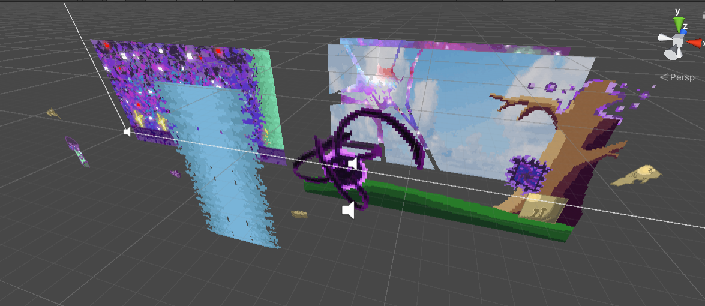
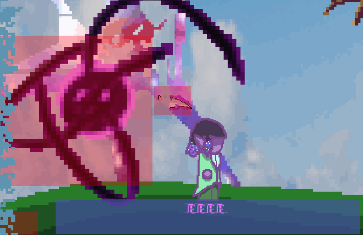

Taking a prompt of "Lie, Fry and Die" from my module and combining it with research into mushrooms and the fungi kingdom inspired
me to create a game concept with a heavy focus on the cycle of life and death,
with the mushroom research inspiring the more psychadellic and spiritualistic aspects of the game concept with how the
main drug with the name "Magic Mushrooms" often known for its impact on spirituality and views of the world.

I was mostly inspired by the pixel graphics of other famous point-and-click games such as the Monkey Island series.
Due to my time constraints for asset creation, development and programming,
I used Unity and a single level to create my game in order to save time and meet my deliverables with the project.

Making this style of game was something i had not experimented with before,
so it was quite a fun learning experience to understand how to handle clicking on object.
I used UI inputs and buttons to handle the dialogue and interactions between the player and the game world.

I enjoyed this project as i got to experiment with different softwares to produce the artwork for my game,
such as using Blender and Photoshop to create the rotating background and tentacle entity while using procreate to produce the
concept art and opening cutscenes.